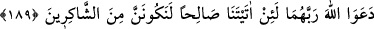

İNSANIN YARATILIŞI
VE ÇOĞALMASI
189. Sizi bir tek candan (Âdem’den) yaratan, ondan da yanında huzur bulsun diye
eşini (Havva’yı) yaratan O’dur. Eşi ile (birleşince) eşi hafif bir yük yüklendi
(hamile kaldı). Onu bir müddet taşıdı. Hamileliği ağırlaşınca, Rableri Allah’a:
Andolsun bize kusursuz bir çocuk verirsen muhakkak şükredenlerden olacağız,
diye dua ettiler.
190. Fakat (Allah) onlara kusursuz bir çocuk verince, kendilerine verdiği bu
çocuk hakkında (sonradan insanlar) Allah’a ortak koştular. Allah ise onların ortak
koştuğu şeyden yücedir.
191. Kendileri yaratıldığı halde hiçbir şeyi yaratamayan varlıkları (Allah’a) ortak
mı koşuyorlar?
192. Halbuki (putlar) ne onlara bir yardım edebilirler ne de kendilerine bir
yardımları olur.
193. Onları doğru yola çağırırsanız size uymazlar; onları çağırsanız da, sukût